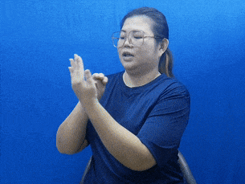
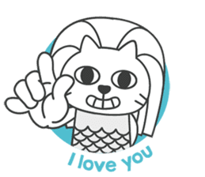
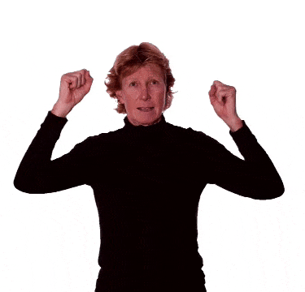
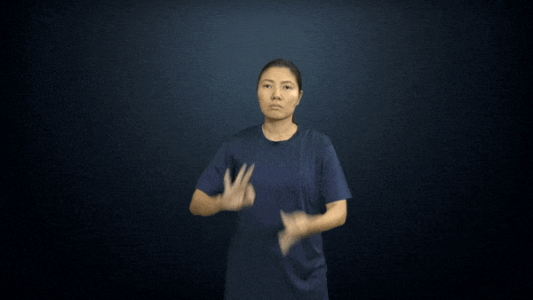
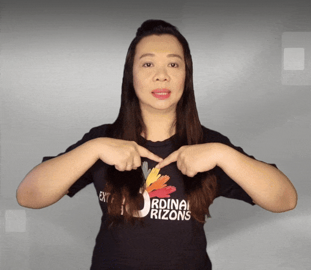
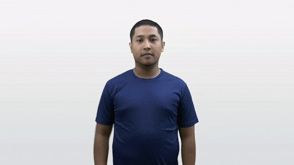

Singapore Sign Language (SgSL) Sign Bank
Table of Contents
1. Concepts, Definitions and Tips
1.1. Agent gesture
The agent gesture is to show a box with both hands and move the box down. This gesture used to turn change an action, into a person doing the action. For example, teach + agent gesture = teacher.
1.2. "Wh" facial expression
This expression is usually used when asking a question, and can be shown as "furrowing" the eyebrows a bit, with the head tilted slightly backwards, and the body leaning towards the respondent.
1.3. Signing area
The signing area refers to the area from the top of your head to the bottom of your waist. The width of that area is shoulder width.
1.4. Tense markers
- Time in sign language is not indicated through tenses, and the verbs in sign language do not change in form when tenses change.
- For example the sign for "eat" and "ate" are the same.
- Time is therefore indicated through the use of adverbs of time.
1.5. Intensity of signs
Intensity is shown by varying the intensity or speed with which a sign is made or by incorporating facial expression. For example:
- Walk can be made quickly or slowly to indicate how the person is walking.
- Drink can be modified depending on the volume consumed.
- Smart becomes brilliant when the sign is exaggerated.
- Pretty becomes beautiful when the sign is exaggerated.
1.6. Initialised sign
An initialised sign is a sign that uses a letter of the English alphabet in its gesture, usually the first letter of the word.
1.7. Letter drag
You can drag out letters at the end of a finger spell if the ending letters are the same. The motion is like pulling the letter out to the side.
1.8. Plural words
Just repeat the sign once more to show that it is plural.
1.9. Nouns from verbs
Usually, the noun form of a word is just the verb form done twice.
1.10. How to communicate with Deaf or Hard-of-Hearing individuals
1.10.1. One-on-one situation
- Get the deaf person's attention before speaking. Call out the person's name. If that is not successful, a tap on the shoulder, a wave, or another visual signal usually does the trick.
- Speak slowly and clearly but don't yell, exaggerate or over pronounce.
- Look directly at the deaf person when speaking.
- Don't place anything in your mouth when speaking such as chewing gum.
- Avoid standing in front of a light source such as a window or a light bulb.
- Be courteous to the deaf person during conversation. If the telephone or doorbell rings, excuse yourself and tell the deaf person you are answering the phone or the door.
1.10.2. In a group with deaf people, like in a class or meeting
- Ask the deaf person to choose the best seating for communication. They will know where to sit.
- Provide new vocabulary in advance.
- Use visual aids.
- Slow down the pace of communication slightly.
- Allow full participation by looking out for deaf people who have questions.
- Repeat questions if the deaf people look doubtful.
1.10.3. Using an interpreter
- Use a specialised academic or educational interpreter.
- Abide by the code of ethics to ensure accurate communication between people who have different language needs, as effective professional practice requires both parties to have a clear understanding of each other.
- Treat the interpreter as a professional.
- Speak directly to the deaf person, and not the interpreter.
- Don't use "tell him / her" when using an interpreter.
2. Signs
2.1. Alphabet
2.1.1. American sign language
2.1.2. Singapore sign language
The hand sign for T is slightly different in Singapore Sign language, with the thumb touching the underside of the index finger instead of the thumb being in between the index and middle finger.
2.2. Numbers
2.2.1. Number
2.2.2. 0

2.2.6. 13
2.2.7. 14
2.2.8. 15
2.2.9. 16
2.2.10. 17
2.2.11. 18
2.2.12. 19
2.2.13. 20
2.2.14. 21
2.2.15. 22 to 99
Similar to the number "21", just show the first number followed by the second number.
2.2.16. 100 (hundred)
2.2.17. 1,000 (thousand)
2.2.18. 1,000,000 (million)
2.2.19. 1,000,000,000 (billion)
2.2.20. 1,000,000,000,000 (trillion)
Same motion as the billion hand sign, but with a "T" hand sign instead of a "B" hand sign.
2.3. Days of the week
2.3.1. Monday
2.3.2. Tuesday

2.3.3. Wednesday
2.3.4. Thursday
2.3.5. Friday
2.3.6. Saturday
2.3.7. Sunday
2.4. Months of the year
2.4.1. January
Jump a "J" hand sign over the open palm facing inwards with fingers pointing upwards.
2.4.2. February
2.4.3. March

2.4.5. May
Jump an "M" hand sign over the open palm facing inwards with fingers pointing upwards, then transition to a "Y" hand sign.
2.4.6. June
Jump a "J" hand sign over the open palm facing inwards with fingers pointing upwards, then transition to an "E" hand sign.
2.4.7. July
Jump a "J" hand sign over the open palm facing inwards with fingers pointing upwards, then transition to an "Y" hand sign.
2.4.8. August
Jump an "A" hand sign over the open palm facing inwards with fingers pointing upwards, then transition to an "G" hand sign.
2.4.9. September
2.4.10. October
2.4.11. November
Jump an "N" hand sign over the open palm facing inwards with fingers pointing upwards.
2.4.12. December
2.5. Mathematical symbols

2.5.2. Subtract / Minus
2.5.3. Multiply / Times
2.5.4. Divide
2.5.5. Equal

2.5.6. Percent / Percentage
2.5.7. To the power of
The example below shows 24, or 2 to the power of 4.
2.6. Symbols
2.6.1. At
2.6.2. Full stop / Period
2.6.3. Parenthesis
2.6.4. Hashtag
2.6.5. Hyphen / Dash
2.7. Vocabulary
2.7.1. I
Point to your chest.
2.7.2. Me
Same as "I".
2.7.3. My
2.7.4. Mine
Same motion as "my", but do it twice.
2.7.5. Self
2.7.6. You
Point to the other person.
2.7.7. Your
2.7.8. Yours
Same motion as "your", but do it twice.
2.7.9. Let's
Make the "L" hand sign with both hands, palm facing each other and index finger pointing in front. Put your hands beside your waist and move them in front.
2.7.10. We
2.7.11. Faculty
Same motion as the first variation of "we", but form the "F" hand sign instead.
2.7.12. Our
2.7.13. They / Them
2.7.14. Their

2.7.17. Oh
Move the "Y" hand sign front and back.
2.7.18. Ooh / Oooo
Make the "O" hand sign with both hands and shake them side to side.
2.7.19. Yes

2.7.20. OK
Just finger spell "OK".
2.7.21. Okay

Just show the "okay" hand sign.
2.7.22. Yeah
Make the "Y" hand sign with both hands with palm facing down, then shake them side to side.
2.7.23. No
The "no" gesture must include the head shake together with the hand gesture.
2.7.24. Introduce
2.7.25. Goodbye / Bye
Wave goodbye.
2.7.26. During
2.7.27. While
Do the "W" hand sign with both hands, and with palms facing each other. Place them at the side of your body, with one hand in front of the other, and then move them outwards.
2.7.29. What
2.7.30. When

2.7.31. Where
Where is usually used at the end of a sentence, so "Where do you live?" becomes "You live where?".
2.7.32. Why
2.7.33. Which
2.7.35. This

2.7.37. I love you / ILY

2.7.38. Teochew
- Variation 1
Make the "I love you" hand sign and put your index finger at your temple. Open and close the middle and ring finger quickly.
- Variation 2
Start with both palm facing upwards, and with one hand in front of the other, facing to the side. Then make a circle by pulling the palms upwards and then back down again, while transitioning the open palm to the "8" hand sign with the palm facing downwards at the end of the gesture.
2.7.39. Plane / Aeroplane / Aerospace / Airplane
Fly the "I love you" hand sign over your head.
2.7.40. Airport
2.7.41. Fly
2.7.42. If

2.7.43. Suppose
Same as the first variation of "if", but put your pinky beside your temple instead of beside your eye.
2.7.44. Bad
2.7.45. Worse
2.7.46. Evil
2.7.47. Thumbs up
2.7.50. Nice / Clean / Wipe
The meaning of this sign depends on the context. In most context, it means nice.
2.7.51. Dirty
2.7.52. Dust
2.7.54. Excuse me
Same motion as "nice / clean", but do it twice.
2.7.55. Please
2.7.56. Sorry
Same motion as "please", but with the "S" hand sign, or a closed fist.
2.7.57. Thank you
2.7.58. Catch
2.7.59. Throw
2.7.60. Find
2.7.61. Search
2.7.62. Search engine
2.7.64. Put
Pretend to hold on to something flat like a file and put it into a box.
2.7.65. Care
Do the "V" hand sign with both hands, stack them one on top of the other and then draw a horizontal circle.
2.7.66. Take care
2.7.67. So
2.7.68. Also
With the palm always facing down, do the "A" hand sign, then do the "L" hand sign. Then, do the gesture for "so".
2.7.69. Because
2.7.70. Therefore / Hence / Thus
This is the mathematical symbol for "therefore".
2.7.71. Additional / Extra / Bonus
Exactly the same gesture as the second variation of "add / plus".
2.7.72. So what / So? / Well…
Change your facial expression based on what you mean with this gesture.
2.7.73. And

2.7.75. Or
Same motion as the second variation of "then", but use the "O" hand shape instead of the index finger.
2.7.76. Not
2.7.78. Cannot (Can't)
2.7.79. Lack
Same motion as the first variation of "cannot", but instead of hitting the index finger on the non-moving hand, hit the middle finger instead.
2.7.80. Will
2.7.81. Do
2.7.82. Behave / Behaviour
Same motion as "do", but use the "B" hand sign instead of curled hand.
2.7.83. Do not (Don't)
2.7.84. Accurate
2.7.85. Correct / Right
2.7.86. Correction
Same motion as "correct", but do it twice.
2.7.87. Wrong
2.7.88. Mistake
2.7.89. Favourite
2.7.90. Luck / Lucky
2.7.92. Sense
Have an open palm at the side of your throat with your fingers pointing upwards, then bring the middle finger down and touch the middle of your throat.
2.7.94. Prefer
2.7.95. Dislike
2.7.96. Enjoy

2.7.97. Thing / Device
2.7.98. None
2.7.99. Nothing
2.7.100. Each
2.7.101. Every

2.7.102. Everything
Just do the gesture for "every" then followed by "thing".
2.7.103. Total
2.7.104. Want

2.7.105. Don't want
2.7.107. Carry
2.7.108. Hold
2.7.109. Grab
Pretend to grab a stick.
2.7.110. Take
Pretend to grab a tissue from a tissue box with all fingers.
2.7.111. Get
2.7.112. Pick
2.7.113. Steal
2.7.114. Own
Make the "O" hand sign with one hand, with the "hole" pointing upwards. It should look like a cup. Then, put all the fingers of your other hand into the "hole" and pull it towards your body.
2.7.115. Borrow
2.7.116. Owe
2.7.117. Give
2.7.118. Treat
Make the "T" hand sign with both hands and make sure the thumb is pointing forward. Then move both hands forward.
2.7.119. Try
Make the "T" hand sign with both hands and make sure the thumb is pointing upwards. Then move both hands in an arc, moving it downwards before moving it upwards again.
2.7.120. Share
2.7.121. Bring
2.7.122. Feel
2.7.123. Cry
2.7.124. Sad
2.7.125. Disappointed
2.7.127. Frustrated

2.7.129. Afraid
2.7.130. Freeze
2.7.132. Happy
2.7.133. Hooray / Hurrah / Yay

2.7.134. Surprise / Surprised
2.7.135. Funny
2.7.136. Fun
Same motion as "funny", but do it once instead of twice.
2.7.137. Curious
2.7.138. Interest (passion) / Interesting
2.7.139. Interesting
2.7.140. Honest
2.7.141. Trust
2.7.142. Confident
2.7.143. Proud
2.7.144. Snobbish
2.7.146. Angry
2.7.147. Tired
2.7.148. Blur
Make an open palm with all fingers outstretched, and your palm facing your face. Move your palm side to side in front of your face.
2.7.149. Bored
2.7.150. Pain
2.7.151. Ouch
2.7.152. Guilty
2.7.153. Embarrassed
2.7.155. Shy
2.7.156. Bashful
Same motion as "shy", but do it with both hands instead of just one.
2.7.157. Stress
Put both hands beside your head, palm facing your face, and open and close your fingers.
2.7.158. Quiet
2.7.160. Calm
Same motion as "quiet", but use the "C" hand sign instead of the open palm.
2.7.162. Increase
2.7.163. Decrease

2.7.164. More
Make two "O" hand signs with both hands and bring them together.
2.7.165. Most
2.7.166. Too
Same motion as "more", but do the "1" hand sign for one of the hands, and touch the tip of the index finger to the side of the "O" hand sign on the other hand.
2.7.167. Less
2.7.168. Least
Do the gesture for "less", then do the gesture for "most". Least is essentially "less-most".
2.7.169. Limited
2.7.170. Head
2.7.172. Bald
2.7.173. Face
2.7.175. Lip
2.7.176. Body
2.7.178. Foot
2.7.179. Heart
2.7.180. Blood / Bloody
2.7.182. Some
2.7.183. Someone
Do the gesture for "some", then do the gesture for "one".
2.7.184. Somebody
Do the gesture for "some", then do the gesture for "body".
2.7.185. No one
Do the gesture for "no", then do the gesture for "one".
2.7.186. Nobody
Do the gesture for "no", then do the gesture for "body"
2.7.187. Few
2.7.188. Only
2.7.189. French
Same motion as "only", but use the "F" hand sign instead.
2.7.191. Another / Other
2.7.192. Over (as in going over something)
Have two palms facing down, with one palm on top of another, but not touching the other palm. Move the palm that is on top in a circle over the other palm.
2.7.193. Under
Put one hand horizontally in front of you with the palm facing down. Then, make the thumbs up hand sign and move it under the palm of the other hand.
2.7.194. On
Just put one hand on top of the other hand.
2.7.195. Flat (noun)
Do the gesture for "on", then bring your hand upwards while changing from an open palm to the "F" hand sign.
2.7.196. Off
When one hand is already on top of the other hand, remove the hand on top.
2.7.197. In
2.7.198. Include
2.7.199. Inclusive
2.7.200. Out
2.7.201. With
2.7.202. Without
Shake your head when you do the sign.
2.7.203. Within
Do the "with" hand sign then do the "in" hand sign.
2.7.204. Of
Make two "F" hand signs with both hands, then close the circular part of the hand sign around the other hand's hand sign, interlocking the two hands at the circular part of the hand sign. One hand should have its last three fingers pointing forward, and the other hand should have the last three fingers pointing upwards.
2.7.205. At
Same motion as the hand sign for "thousand", but instead of the open palm facing the other hand, point the open palm forward and the fingers on the other hand should contact the back of the palm instead.
2.7.207. But
2.7.208. Different
Same motion as "but", but do it twice.
2.7.209. Clock
2.7.210. Time
2.7.211. Date (time)
Date as in date and time, or save the date.
2.7.214. Back
2.7.215. History
2.7.216. Past
2.7.217. Future
2.7.218. First
- Variation 1
- Variation 2
Show the "1" hand sign and then quickly rotate your wrist around to face the palm inwards. It is similar to the "only" hand sign, but much faster and more forceful. This gesture can be extended to other numbers by doing their respective hand signs instead of the "1" hand sign. For example, the gesture for "third" would be the same motion, but showing the "3" hand sign instead of the "1" hand sign.
2.7.219. Last
2.7.221. Not yet
2.7.222. Soon
2.7.223. Usually
Do the gesture for "most", followed by the gesture for "time".
2.7.224. Always
2.7.225. Frequently
2.7.226. Sometimes
2.7.229. Send
Similar motion to "after", but for the hand on the outside, the fingers should be pointing downwards instead of to the side.
2.7.231. Late
2.7.232. Since
2.7.233. Start
2.7.234. Stop

2.7.235. Finish
2.7.236. End
Same motion as "finish", but use the "E" hand sign instead of the open palm.
2.7.237. Conclusion
Same motion as "finish", but use the "C" hand sign instead of the open palm.
2.7.238. Done / Over / Finish
Have two palms facing upwards with the fingers pointing forward. Then, rotate your hand such that the palms face downwards.
2.7.239. Already
Same motion as "done", but use the "A" hand sign with the thumbs pointing towards each other when the palms are facing upwards, and transition to an open palm when the palms are facing downwards.
2.7.240. Next
2.7.241. Again
2.7.242. Repeat
Same motion as "again", but use the "R" hand sign instead of the open palm.
2.7.243. Often
2.7.244. Still
2.7.246. Afternoon
The hand is pointed diagonally in front.
2.7.247. Noon
Similar to "afternoon", but the palm faces the side and the arm is vertical instead of diagonally front and upwards.
2.7.248. Evening
2.7.249. Night
2.7.250. Midnight
Do the gesture for "middle", followed by the gesture for "night".
2.7.251. Overnight
2.7.252. To

2.7.254. Tonight
2.7.255. Tomorrow
2.7.256. Yesterday
2.7.258. Day
2.7.259. Week
2.7.260. Month
2.7.261. Year
2.7.262. World
Same motion as "year", but with a "W" hand sign instead of the closed fist.
2.7.263. Types
Same motion as "year", but with a "T" hand sign instead of the closed fist.
2.7.264. Kind
Same motion as "year", but with a "K" hand sign instead of the closed fist.
2.7.265. Just
2.7.266. Example
2.7.267. Sample
Same motion as "example", but use the "S" hand sign instead of the "E" hand sign.
2.7.268. Character
2.7.269. Evaluate
2.7.270. About
2.7.271. Is
Put the thumb of the "I" hand sign on your chin.
2.7.272. Are
Put the tips of the fingers of the "R" hand sign on your chin.
2.7.273. Be
Put the tips of the fingers of the "B" hand sign on your chin.
2.7.274. By
- Variation 1
Place one hand vertically with all fingers pointing upwards, and with your palm facing the side. The other hand should be horizontal with the palm facing downwards and all fingers pointing to the side. Move this hand past the other hand, on the outside of your body.
- Variation 2
Make a "B" hand sign and place it below your mouth, then move it outwards to form a "Y".
2.7.275. Beside
2.7.276. Behind
2.7.277. Between
2.7.278. Through
2.7.279. For
2.7.280. From
2.7.281. Away
2.7.282. Much
2.7.284. Any
Make the "A" hand sign with one hand with the palm facing up. Then rotate your hand until the palm faces down, and change from the "A" hand sign to the "Y" hand sign while rotating.
2.7.285. Anything
Do the gesture for "any", then do the gesture for "thing".
2.7.286. Anytime
Do the gesture for "any", then do the gesture for "time".
2.7.287. Anywhere
Do the gesture for "any", then do the gesture for "where".
2.7.288. Anyone
Do the gesture for "any", then do the gesture for "one".
2.7.289. Ever
Same motion to "Monday", but instead of the "M" hand sign, do the "E" hand sign.
2.7.290. Never mind
Hold up two palms facing you. Use the back of one palm to hit the palm of the other hand, then alternate your hands and repeat the motion for 2 more times, for a total of 3 times.
2.7.291. Never
The motion of the gesture looks a bit like a question mark. Make sure to shake your head when doing this gesture.
2.7.292. Weather
Same motion as "never", but use the "W" hand sign instead of the open palm.
2.7.293. Season
Same motion as "never", but use the "S" hand sign instead of the open palm.
2.7.294. Very
2.7.296. Quite
The only difference between this and "really" is the facial expression.
2.7.297. Don't bluff

2.7.298. Bluff
Same motion as "Don't bluff", but without the head shake.
2.7.299. Lie / Fib
2.7.300. Near
2.7.301. Far
2.7.302. Wait
2.7.303. Service
2.7.304. Patient
2.7.305. Slow
2.7.306. Fast
2.7.307. Quick / Quickly
2.7.308. Immediate / Immediately

2.7.309. Hurry
2.7.310. Turn
Hold up an index finger pointing upwards. To turn left, move a flat palm with the palm facing the index finger and turn left after the palm passes the finger. To turn right, move a flat palm with the back of the palm facing the index finger and turn right after the palm passes the finger.
2.7.311. Left (direction)
2.7.312. Right (direction)
2.7.313. Up (direction)
Make the "U" hand sign and move it upwards. Alternatively, you can just point upwards and move your hand upwards.
2.7.314. Down (direction)
Hold up a hand with the palm facing the body and move it downwards. Alternatively, you can just point downwards and move your hand downwards.
2.7.315. North
2.7.316. South
2.7.317. East
2.7.318. West
2.7.319. Top
2.7.320. Middle
2.7.321. Bottom

2.7.322. Tradition
2.7.323. Ask

2.7.324. Question
2.7.325. Pray
Exact same motion as the first variation of "ask".
2.7.326. Oral
2.7.327. Say / Hearing person
2.7.329. Voice
2.7.330. Yell
Same motion as "voice", but with the "Y" hand sign instead of the "V" hand sign.
2.7.331. Shout
2.7.332. Gossip
2.7.333. Tease

2.7.334. Trick
2.7.335. Mention
2.7.336. Refer / Reference / Relay
2.7.337. Convince

2.7.338. Offend
Hold one arm at a 45-degree angle, with the elbow being lower than the hand. The palm of this hand should be facing down. The other hand forms the "O" hand sign and slides it down the outside of the arm.
2.7.339. Discuss
2.7.340. Explain
2.7.341. Talk
2.7.342. Communication
Same motion as "talk", but with the "C" hand sign instead of the index finger.
2.7.343. Interview
Same motion as "talk", but with the "I" hand sign instead of the index finger.
2.7.344. Conversation
Same motion as "talk", but with 4 fingers instead of just the index finger.
2.7.345. Race (as in running a race)
Same motion as "talk", but use the "R" hand sign instead and put your hands in front of your chest instead of in front of your mouth.
2.7.346. Traffic
2.7.347. Malay
Similar motion to "traffic", but have your hands beside your neck instead of in front of your chest. Your hands should also be angled, following the shape of your face.
2.7.349. Call
Do the "C" hand sign and move it outwards from your mouth.
2.7.350. Contact

2.7.353. Phone / Telephone
2.7.355. Smartphone
2.7.356. Hope
- Variation 1
- Variation 2
- Variation 3
- Variation 4
Have both palms facing up, fingers facing forward and pointed 45 degrees upwards, and on the side of your body. One palm should be closer to your body than the other. Then close all of your fingers on both palms, forming two fists. Bring your hands slightly closer to your body as you close your fingers on both palms.
2.7.357. Help
Move your thumb towards the person you want to help, towards yourself if you want other people to help you.
2.7.358. Therapy
Same motion as "help", but use the "T" hand sign instead of the thumbs up hand sign.
2.7.359. Welfare
Same motion as "help", but use the "W" hand sign instead of the thumbs up hand sign.
2.7.360. Volunteer

Take note of where you pull your shirt, as this sign is very similar to the sign for "shirt". It should be at your shoulder.
2.7.361. Fault (as in someone's fault)
Similar to "volunteer", but just leave your hand at the position instead of pulling your shirt.
2.7.362. Appointment
2.7.364. Meeting
2.7.365. Name
2.7.366. Sit
2.7.367. Show (verb)

2.7.369. Recap
Same motion as "see", but move the "V" hand sign back after you move it outwards.
2.7.370. Look
2.7.371. Watch
2.7.372. Notice / Recognise / Detect
2.7.373. Visual
2.7.376. Must / Need / Have to / Require / Necessary / Compulsory
2.7.377. Shall / Should
Same motion as "must", but do it lightly and do it twice.
2.7.378. Might / Maybe / May
2.7.379. Realise
2.7.380. Reason
2.7.381. Idea
2.7.382. Understand

2.7.383. Misunderstand

2.7.384. Confused
2.7.385. Mean (verb) / Meaning (noun)
2.7.386. Forget
2.7.387. Remember
2.7.388. Dream
2.7.389. Smart
2.7.390. Brilliant
Same motion as "smart", but do it once more and move it away from your head when you do it again.
2.7.391. Intelligent
2.7.392. Think
2.7.393. Wonder
Make a "W" hand sign and rotate a circle around your temple.
2.7.394. Know
2.7.395. Don't know
Have your hand with all fingers pointing upwards and the palm facing the side. Bend your middle finger and put it on your temple. Then rotate your hand from front to back.
2.7.396. Guess
2.7.397. Gamble
2.7.398. Learn
2.7.399. Practice
2.7.400. Train (verb) / Training
Same motion as "practice", but with the "T" hand sign instead of the fist.
2.7.401. Easy
2.7.402. Stone
2.7.403. Hard
2.7.404. Tough
2.7.405. Difficult
2.7.406. Problem / Difficulty
2.7.407. Challenge
2.7.408. Struggle
2.7.409. File
2.7.410. Backpack
2.7.411. Book (noun)
2.7.412. Book (verb)
2.7.413. Cancel
2.7.414. Read
2.7.415. Write
2.7.417. Draw

2.7.418. Paint / Painting
2.7.419. Art
2.7.421. Busy
2.7.422. Business
2.7.423. Use
Same motion as "business", but use the "U" hand sign. The "U" hand sign can either have the palm facing outwards or inwards.
2.7.424. Function
Same motion as "business", but use the "F" hand sign. The thumb and index finger of the "F" hand sign should be the ones touching the back of the other palm.
2.7.425. Employ / Enterprise
Same motion as "business", but use the "E" hand sign.
2.7.426. Job
2.7.427. Hire / Recruit
2.7.428. Fire (verb)
2.7.430. Retire
2.7.431. Holiday
2.7.432. Leisure
2.7.433. Advertise
2.7.434. Fix

2.7.435. Break (verb)
Break as in to break something.
2.7.436. Break (noun) / Intermission
Break as in to take a break.
2.7.438. Gone / Missing / Absent / Passed Away / Dead / Extinct
2.7.439. Come
2.7.440. Disappear

2.7.442. Adopted (adjective)

2.7.444. Shop
Same motion as "buy", but with "S" hand shape on the hand that is moving out of the palm on the other hand.
2.7.445. Shopping
Same motion as "shop", but repeat the motion at least once more.
2.7.446. Pay
2.7.447. Cost
2.7.448. Cheap
2.7.450. Rich
2.7.453. Finance / Financial
Same motion as the first variation of "money", but use the "F" hand sign for the hand on top.
2.7.454. Instalment
2.7.455. Interest (bank)
2.7.456. Dollar
2.7.457. Cent
2.7.458. Coin (noun)

2.7.459. Worth

2.7.460. Important
Similar motion to "worth", but surround a sphere from bottom to top, starting with the palm up and transitioning into the palms being down.
2.7.461. Value
Same motion as "important", but use the "V" hand sign instead.
2.7.462. Sell
2.7.463. Ready
2.7.464. Hate
2.7.465. Love
2.7.467. Linguistics
Same motion as "interpret", but pull your hands apart.
2.7.468. Interpreter
2.7.469. Change
2.7.470. Become
Same motion as "change", but use the "B" hand sign for both hands instead of the "X" hand sign.
2.7.471. Revision
Same motion as "change", but use the "R" hand sign for both hands instead of the "X" hand sign.
2.7.472. Translate
Same motion as "change", but use the "T" hand sign for both hands instead of the "X" hand sign. Then, the two "T" hand signs transition to index fingers pointing to the side.
2.7.473. Influence (verb) / Counsel (verb) / Advise

2.7.474. Influence (noun) / Counsel (noun) / Advice
Same motion as "influence (verb)", but do it twice.
2.7.475. Effective / Efficient
Same motion as "influence (verb)", but hold the "E" hand sign all the way instead of opening up a flattened "O" hand sign.
2.7.476. Distort / Mangle
2.7.477. Win
Pretend to hold the flag in one hand, then use the other hand to grab it.
2.7.478. Miss
Similar motion to "win", but instead of the hand pretending to hold a flag, point an index finger upwards. The other hand tries to grab the index finger but misses.

2.7.480. Fail
2.7.481. Lose (as in loser) / Lost
Hold an open palm facing up, and touch the fingers on the "V" hand sign to that open palm.
2.7.483. Brave
2.7.484. Strong
Trace out a large bicep using your open palm, starting the thumb touching the top of the bicep and ending with the pinky finger touching the bottom of the bicep.
2.7.485. Power
Same motion as "strong", but use the "P" hand sign. The palm should always be facing inwards instead of changing from outwards to inwards.
2.7.486. Intense
Same motion as "strong", but use the "I" hand sign. The palm should always be facing inwards instead of changing from outwards to inwards.
2.7.487. Summarise
2.7.488. Make

2.7.489. Manufacture
Same motion as "make", but form the "M" hand sign instead of a fist.
2.7.490. Build / Building
2.7.491. Block / Barrier
2.7.492. Flat (noun)
Flat meaning a HDB flat.
Make two "F" hand signs with both hands, both palms facing down. Place one hand on the back of the other hand and move that hand upwards.

2.7.494. Obstacle
2.7.496. Tree
2.7.497. Park
2.7.498. Hill
2.7.499. Mountain
2.7.502. Improve
2.7.503. Calendar
2.7.504. Program
Similar motion to "calendar", but jump a "P" hand sign instead of a "C" hand sign.
2.7.505. Project
Similar to "program", but instead of continuing with the "P" when the hand is at the back of the palm, do the "J" hand sign instead.
2.7.506. Sign language
2.7.507. Pronounce
Same motion as "sign language", but use the "P" hand sign with the palm facing towards your body, and do the motion just in front of your throat instead of in front of your chest.
2.7.508. Language
Make two "L" hand signs with the index finger pointing forward and palm facing downwards, with the thumbs touching each other, then wiggle them while moving outwards.
2.7.509. Level
Similar motion to "language", but don't wiggle your fingers, and the index and thumb of the "L" hand sign should remain horizontal throughout the motion.
2.7.510. Keep
Make two "K" signs with both hands and stack them on top of each other vertically.
2.7.511. Free
Make two "F" hand signs with both hands and close them to your chest, then open them up like you're flying away.
2.7.512. Study
2.7.513. Teach
2.7.514. Educate
Same motion as "teach", but use the "E" hand sign with palms facing each other instead of the flattened "O" hand sign.
2.7.515. Instruct
Same motion as "teach", but use the "I" hand sign with palms facing each other instead of the flattened "O" hand sign.
2.7.517. Teacher
2.7.518. Individual
Same motion as "person", but use the "i" hand sign instead of an open palm.
2.7.519. Client
2.7.520. People
2.7.521. Crowd
2.7.522. Law
2.7.523. Course
Same motion as "law", but use the "C" hand sign instead of the "L" hand sign.
2.7.524. Lesson
2.7.525. Assistant / Aid
2.7.526. Boss
2.7.527. King
2.7.528. Queen
2.7.529. Prince
Note the angle of the index finger for this sign. The index finger is nearly horizontal in this sign, while the index finger vertically upwards in the sign for "king".
2.7.531. President
2.7.532. Government
2.7.533. Doctor
2.7.534. Nurse
Same motion as "doctor", but use the "N" hand sign instead of the "D" hand sign.
2.7.535. Medicine / Medical
2.7.536. Cochlear Implant
2.7.537. Hearing Aid
2.7.538. Sick (medical)
2.7.539. Mask
2.7.542. Faint
2.7.543. Flu
2.7.545. Cancer
Hold one arm horizontally with the palm facing down. The other hand moves from the side of your body and pretend to grab a pole at wrist of your horizontal arm. The hand then moves in a horizontal circle above the wrist of the arm before moving towards the elbow of the arm and throwing the pole it grabbed to the side. Then the hand, still an open palm from throwing the pole, moves back to the side of your body it started from.
2.7.546. Emergency
2.7.547. Expert
2.7.548. Pro / Professional
2.7.549. Secret / Confidential

2.7.550. Secretary
2.7.551. Count
2.7.552. Account
Same motion as "count", but do it twice.
2.7.553. Accountant
2.7.554. Colour
2.7.555. White
2.7.557. Grey
2.7.558. Yellow
2.7.559. Purple
Same motion as "yellow", but with a "P" hand sign.
2.7.560. Blue
Same motion as "yellow", but with a "B" hand sign.
2.7.561. Green
Same motion as "yellow", but with a "G" hand sign.
2.7.562. The
Same motion as "yellow", but with a "T" hand sign.
2.7.563. Orange (colour)
2.7.565. Pink
Same motion as the first variation of "red", but form a "P" first and use the middle finger to draw the line down from your chin.
2.7.566. Brown
2.7.567. Gay (sexual orientation)
2.7.568. Transgender
2.7.569. Boy
Male nouns are all done above the temple.
2.7.570. Girl
Female nouns are all done below the nose.
2.7.571. Brother
2.7.572. Sister
2.7.573. Siblings
Do the gesture for "brother" then do the gesture for "sister".
2.7.574. In-law
Do the gesture for "in", followed by the gesture for "law".
2.7.575. Close
Place a palm facing towards your body with fingers pointing to the side. Make the "C" hand sign with the other hand and use it to push the palm inwards, or further towards your body.
2.7.576. Friend

2.7.577. Buddy
Same motion as "friend", but forming the "B" hand sign with both hands instead.
2.7.578. Mate
Same motion as "friend", but using the "M" hand sign with the fingers open instead.
2.7.579. Neighbour
Same motion as "friend", but using the "N" hand sign with the fingers open instead.
2.7.580. Community
Same motion as "friend", but with a fully open palm.
2.7.581. Boyfriend
Do the gesture for "boy", then do the gesture for "friend".
2.7.582. Girlfriend
Do the gesture for "girl", then do the gesture for "friend".
2.7.583. Date (relationship)
Date as in to go on a date with someone.
2.7.585. Fine
2.7.586. Man

2.7.587. Woman
Do the gesture for "girl", then do the "fine" gesture at the same height.
2.7.588. Lady
2.7.589. Single (adjective)
2.7.590. Engaged (marital status)
2.7.592. Marry / Marriage / Married
2.7.594. Wife
Do the gesture for "girl", then do the gesture for "marry".
2.7.595. Father
2.7.596. Mother
2.7.597. Parents
2.7.598. Grandfather
2.7.599. Grandmother
2.7.600. Uncle
2.7.601. Aunt
2.7.602. Cousin (male)
2.7.603. Cousin (female)
Same motion as "cousin (male)", but do it beside your cheeks instead of your temple.
2.7.604. Niece
2.7.605. Nephew

2.7.607. Baby
2.7.608. Son
Do the gesture for "boy", then do the gesture for "baby", but don't rock the baby.
2.7.609. Daughter
Do the gesture for "girl", then do the gesture for "baby", but don't rock the baby.
2.7.610. Child
2.7.611. Children

2.7.614. Short (height)
2.7.615. Short (measurement)
2.7.618. Wide
2.7.619. Thin (person)
2.7.623. Large
2.7.624. Small
2.7.625. Little
Make the "L" hand sign with both hands with palm facing each other, and the index finger pointing forward, then move them towards the centre until the fingers touch.
2.7.626. Bit
2.7.628. Age (noun)

2.7.629. Old
2.7.630. Elderly
Same motion as "old", but with the "E" hand sign instead of the "O" hand sign.
2.7.631. Eldest
Do the gesture for "old", followed by the gesture for "most".
2.7.632. Pretty
Make a "P" hand sign and circle your head.
2.7.633. Handsome
Same motion as "P", but use the "H" hand sign instead.
2.7.634. Cute
2.7.635. Sweet
2.7.636. Beautiful

2.7.637. Ugly
Cross the index fingers on both hands, forming a cross, the pull both hands away into the "X" alphabet hand sign.
2.7.638. Light (noun)
Light as in light from the sun.

2.7.641. Light (weight)
Start with an open palm facing outwards on both hands and use your middle fingers to lift a box up, ending with the palm pointing upwards.
2.7.642. Heavy
Pretend to hold a box from underneath the box, then show your hands and body being weighed down by the heavy box.
2.7.643. Stab
2.7.644. Kill
2.7.645. Hunt
2.7.646. Rope
2.7.649. Live
2.7.650. Address
Same motion as "live", but with the thumbs up gesture instead of the "L" hand sign.
2.7.651. Survive
Similar motion as "live", but use the "S" hand sign instead of the "L" hand sign, and the fists should touch the stomach area before touching the chest area instead of a straight upwards motion.
2.7.654. Braille
2.7.655. Control
2.7.656. Manage
2.7.657. Plan
2.7.658. Lead (verb)
Lead as in to lead a group.
Use one hand to grab the other hand, which has an open palm facing your body, and then pull it along.
2.7.659. Follow
2.7.660. Join

2.7.661. Breathe
2.7.662. Eat
2.7.663. Grocer
2.7.664. Food / Eat
2.7.665. Breakfast
2.7.666. Lunch
2.7.667. Dinner
2.7.668. Supper
2.7.669. Meal
Same motion as "supper", but with the "M" hand sign.
2.7.670. Snack
2.7.671. Fill
2.7.673. Enough
Similar motion to the first variation of "full", but the hand moves away from your body instead of towards your body.
2.7.674. Empty
2.7.675. Hungry
2.7.676. Passion
Same motion as "hungry", but do the motion over your chest.
2.7.677. Horny
Same motion as "passion", but do it continuously and with more intensity.
2.7.678. Fruit
2.7.680. Banana
2.7.681. Cherry
2.7.682. Coconut
2.7.683. Durian
2.7.686. Mangosteen
2.7.687. Orange (fruit)
2.7.688. Lime
2.7.689. Juice
Same motion as the gesture for "lime", but with the "Y" hand sign instead of the "L" hand sign.
2.7.690. Orange juice
Do the gesture for "orange (fruit)", then do the gesture for "juice".
2.7.692. Papaya
2.7.694. Berry
2.7.695. Blackberry (fruit)
Do the gesture for "black", then do the gesture for "berry".
2.7.696. Blueberry
Do the gesture for "blue", then do the gesture for "berry".
2.7.697. Raspberry
Do the hand sign for "R", then do the gesture for "berry".
2.7.698. Strawberry
2.7.699. Tomato
2.7.700. Watermelon
2.7.701. Peach
2.7.702. Pear
2.7.703. Rambutan
2.7.704. Melon / Pumpkin
2.7.705. Date (fruit)
Date as in red dates.
2.7.706. Vegetable
2.7.707. Meat
2.7.708. Beef
2.7.709. Sugar
2.7.710. Salt
2.7.711. Cheese
2.7.712. Chocolate
2.7.713. Bread
2.7.714. Biscuit
2.7.715. Cookie
2.7.716. Cake
2.7.717. Pie
2.7.718. Oyster
Cup both hands together then open where the thumb is. Your palms should be facing upwards when you open them.
2.7.720. Oyster Omelette
Do the gesture for "oyster", then do the gesture for "egg".
2.7.721. Dim Sum
2.7.722. Carrot Cake
Have both palms facing towards the body, with the fingers pointed down. Put one palm in front of the other, and do a chopping motion with the palm furthest away from your body.
2.7.723. Chee Cheong Fun
Show a long, rectangular rod that becomes thinner with both hands, using the index finger and thumb. Then make a scissors with one hand and cut up the rod you just showed.
2.7.724. Rice

2.7.726. Kway Teow
2.7.727. You Tiao (read description)
Same motion as the gesture shown above, but your index and middle finger are apart instead of together.
2.7.728. Roti prata
Pretend to flip a roti prata. To flip a roti prata, hold on to one end of the roti prata with both hands using the thumb of the "A" hand sign. Both hands should be close together. Rotate both hands such that both thumbs draw a horizontal circle.
2.7.729. Rojak
Pretend to throw things into a bowl, then stir the bowl by holding a spoon with your fist and drawing a horizontal circle
2.7.730. Ice Cream
2.7.731. Ice Kachang
Mime the shape of an ice kachang. Have one palm facing up, then use the other hand to show a cone shape.
2.7.732. Teh Tarik
Mime pulling tea. Make two fists, one with the palm facing down and one with the palm facing the side. Place the thumb of the fist with the palm facing down in the middle of the other fist, and move that fist upwards and to the side. Swap the two fists and repeat the motion.
2.7.733. Mix / Mixture
2.7.737. Water
2.7.738. Ice
2.7.739. Milk
2.7.740. Coffee
2.7.741. Tea
2.7.742. Soup
2.7.743. Sour
2.7.744. Spoon
2.7.745. Fork
2.7.746. Chopsticks
2.7.747. Knife
2.7.748. Sharp
2.7.749. Cook
2.7.750. Wash
2.7.751. Dry
2.7.753. Class
2.7.754. Group
Same motion as "class", but use the "G" hand sign with both hands instead.
2.7.755. Family
Same motion as "class", but use the "F" hand sign with both hands instead.
2.7.756. Association
Same motion as "class", but use the "A" hand sign with both hands instead.
2.7.757. Team
Same motion as "class", but use the "T" hand sign with both hands instead.
2.7.758. Ministry
Same motion as "class", but use the "M" hand sign with both hands instead.
2.7.759. Organise / Organisation
Same motion as "class", but use the "O" hand sign with both hands instead.
2.7.760. Crew
Same motion as "class", but halfway through the motion, change the sign on both hands from the "C" hand sign to the "W" hand sign.
2.7.761. Club
Same motion as "class", but halfway through the motion, change the sign on both hands from the "C" hand sign to the "B" hand sign.
2.7.762. Classroom
2.7.763. Primary
Hold one arm horizontally with the palm facing down, then make the "P" hand sign with the other hand and rotate it in a circle below the other palm.
2.7.764. Secondary
Hold one arm horizontally with the palm facing up, then make the "S" hand sign with the other hand and draw a loop above the other palm.
2.7.765. College
Same motion as "secondary", but with an open palm instead of the "S" hand sign.
2.7.766. University
Same motion as "secondary", but with the "U" hand sign instead of the "S" hand sign.
2.7.767. Paper
2.7.768. Tissue paper
2.7.769. Identify
2.7.770. Individual
Similar to the agent gesture, but use two pinkies instead and do it twice.
2.7.771. Spell (finger spell)
2.7.772. School (noun)
2.7.773. Toilet / Bathroom
Shake the "T" hand sign from side to side.
2.7.774. Lecture / Present
2.7.775. Canteen / Cafeteria
2.7.776. Computer
2.7.777. Internet / Online / Network
2.7.778. Save

2.7.780. Upload
2.7.781. Stream (as in stream data)
2.7.782. Stream (as in water stream)
2.7.783. River
2.7.784. Sound
2.7.785. Audio
Rub your fist around your ear.
2.7.786. Song
2.7.788. Microphone / Mic
2.7.789. Hard-of-hearing
2.7.790. Hearing (person)
2.7.791. Dumb
Put your fist on your forehead.
2.7.792. Mute
Touch all fingers to your throat, with the palm facing downwards.
2.7.793. Stupid
Put the "V" hand sign on your forehead with the palm side facing outwards.
2.7.794. Ignorant
2.7.795. Science
Make two thumbs down and act like you are pouring things into a beaker.
2.7.796. Chemical
Same motion as "science", but with the "C" hand sign instead of the thumbs down sign.
2.7.797. Biological
Same motion as "science", but with the "B" hand sign instead of the thumbs down sign.
2.7.798. Physics
Same motion as "science", but with the "P" hand sign instead of the thumbs down sign.
2.7.799. Mechanical
Interlock your fingers with each other, thumb pointed upwards and the palm facing towards your body.
2.7.800. Machine
Same hand shape as "mechanical", but shake your hands up and down.
2.7.801. Engineering
Make two "Y" hand signs with both hands and connect them thumb to thumb, with the pinky pointed forward. Then, rotate one hand up and down while the other hand remains still.
2.7.802. Psychology / Psychological
2.7.804. Culture
2.7.805. Social
Same motion as "culture", but use the "S" hand sign instead of the "C" hand sign.
2.7.806. Local
Same motion as "culture", but with the "L" hand sign instead of the "C" hand sign.
2.7.807. Environment
Same motion as "culture", but use the "E" hand sign instead of the "C" hand sign.
2.7.808. Surroundings
Hold one index finger pointing upwards on one hand and the palm facing the front. The rest of the fingers should be closed. The other hand has all fingers pointing down and stretched out. Rotate the wrist on this hand such that the hand goes around the index finger.
2.7.809. Initial / Initialise
Make the "I" hand sign with one hand and the palm should be facing forward. The other hand uses the index finger to screw the base of the thumb.
2.7.810. Technology
2.7.811. Collapse / Break down
2.7.814. Exam
Place an arm vertically and have all the fingers point upwards. The palm should be facing to the side. The other hand does the "X" hand sign and repeatedly bends and straightens the index finger while moving down the arm.
2.7.815. Sky
2.7.816. Wind (noun) / Windy
Wind as in gone with the wind.
2.7.817. Clouds
2.7.818. Stars
2.7.819. Ground
Hold one arm horizontally with palm facing downwards. Make a "G" hand sign with the other hand and move it in a horizontal circle starting from the palm of the other hand, moving outwards and then coming back.
2.7.820. Field
Same motion as "ground", but with the "F" hand sign instead.
2.7.821. Land
Same motion as "ground", but with the "L" hand sign instead.
2.7.822. Flat (adjective)
Use your whole palm with it facing down to show a flat surface.
2.7.823. Straight
2.7.825. Concept
Same motion as "sun", but start with the thumb of the "C" hand sign at your temple instead of the "C" surrounding your eyes.
2.7.826. Moon
2.7.827. Rain
2.7.829. Lightning
2.7.830. Thunder
2.7.831. Grow
2.7.832. Spring (season)
2.7.833. Summer
2.7.836. Refrigerate
Same as the first variation of "winter", but use the "R" hand sign for both hands instead.
2.7.837. Fall (verb)
- Variation 1
- Variation 2
- Variation 3
- Variation 4
Put your arm in the same position as the gesture for "autumn". The other hand does the "V" hand sign and places both fingers on the elbow, with the palm facing the elbow. Then, it rotates upwards such that the palm faces upwards at the end of the gesture.
2.7.839. Warm
2.7.841. Degree Celsius
2.7.842. Fan (as in hand fan)
2.7.843. Play
2.7.844. See-saw
2.7.845. Slide (noun)
Slide as in the slide at a playground.

2.7.846. Swing (noun)
Swing as in the swing at a playground.

2.7.847. Game

2.7.848. Leaf
2.7.849. Drive
2.7.850. Bus
2.7.851. Car
Same motion as "bus", but use the "C" hand sign instead of the "B" hand sign.
2.7.852. Van
Same motion as "bus", but use the "V" hand sign instead of the "B" hand sign.
2.7.853. Truck
Same motion as "bus", but use the "T" hand sign instead of the "B" hand sign.
2.7.854. Bus stop
Do the gesture for "bus", followed by the gesture for "stop".
2.7.856. Cycle (verb)
2.7.857. Motorcycle / Motorbike
Pretend to hold on to the handlebar of the motorcycle and rotate both hands upwards like revving the motorcycle.
2.7.858. Train (noun)
2.7.859. MRT
2.7.860. Taxi
2.7.861. Boat
2.7.862. Ship
Similar to "boat", but instead of both hands being cupped, one of the hands is doing the "S" hand sign, and is placed on top of the other hand.

2.7.864. Scooter / Skateboard
Place one hand horizontally, with fingers facing forward and the palm facing downwards. The other hand has the palm facing the ground, and uses the fingers to push the ground backwards.
2.7.865. Roller-skate
2.7.866. Rollerblade
2.7.867. Figure-skate
2.7.868. Transfer
Make the "U" hand sign, but spread your fingers and curl them into a hook. Then move your hand from one point to another point.
2.7.869. Move
2.7.870. Gesture
Make the "X" hand sign with both hands, and move your hand up and down beside the top of your head. Your hands should be alternating as well.
2.7.871. Ride

2.7.873. Tour
2.7.874. Visit
2.7.875. Passport
2.7.876. Professor
Similar hand sign to "ride", but show the "P" hand sign going over the other hand instead of moving both hands together.
2.7.877. Activity
2.7.880. Continue
2.7.881. Run
- Variation 1
- Variation 2
Move your hands like you are running.
- Variation 3
Make two "L" hand signs and touch the thumbs together. Then curl and uncurl the index finger of both hands while moving your hands forward.
Another way to think of it is to do the gesture for "continue", but curl and uncurl the index fingers of both hands while moving your hands forward.
2.7.882. Swimming
2.7.883. Way
2.7.884. Road
2.7.885. Path
Same motion as "way", but instead of the open hands, use a "P" hand sign.
2.7.886. Drum
Just act like you're playing a snare drum.
2.7.887. Key
2.7.888. Door
2.7.889. Opening a door
2.7.890. Closing a door
2.7.891. Closet
2.7.892. Stay
2.7.894. Home
2.7.895. Hotel

2.7.897. Floor
2.7.898. Bowl
2.7.899. Ball
2.7.900. Basketball
2.7.901. Soccer / Football
2.7.902. Knob
2.7.903. Pig / Pork
2.7.904. Clown
2.7.907. Rose
Same motion as "flower", but with the "R" hand sign instead of the flattened "O" hand shape.
2.7.908. Tulips
Same motion as "flower", but with the "T" hand sign instead of the flattened "O" hand shape.
2.7.909. Animal
2.7.911. Duck (noun)
Same motion as "bird", but open and close the all the fingers instead of just the thumb and the index finger.
2.7.912. Rooster
2.7.914. Chick / Chicken
2.7.915. Duck (animal)
2.7.916. Swan
Place one arm horizontally, with the palm facing downwards. Make the flattened "O" hand shape with the other hand and place the elbow on the back of the other palm, mimicking how a swan looks like.
2.7.917. Dinosaur

There should also be an arm held horizontally under the arm doing the dinosaur hand sign, such that the dinosaur is moving along the arm.
2.7.918. Bear
2.7.919. Cat
2.7.920. Bug
2.7.921. Cockroach
- Variation 1
Point upwards using your index finger with both hands, with your palm facing outwards. Then, put both hands on your head to simulate the feelers of a cockroach.
- Variation 2
Have one arm horizontally and make a claw shape with the hand with the palm facing downwards. Place the "C" shape on the back of the palm using the other hand. Wiggle the fingers on the clawed hand and move it to the side to simulate an insect walking.
2.7.922. Ant
Same motion as the second variation of "cockroach", but use the "A" hand sign instead of the "C" hand sign.
2.7.923. Beetle
Same motion as the second variation of "cockroach", but use the "B" hand sign instead of the "C" hand sign.
2.7.924. Insect
Same motion as the second variation of "cockroach", but use the "I" hand sign instead of the "C" hand sign.
2.7.925. Worm
2.7.926. Mouse (animal)
2.7.927. Mouse (computer)
2.7.928. Cow
2.7.929. Deer
2.7.930. Dog
2.7.931. Fish
2.7.932. Binoculars
2.7.933. Safari
Hold an arm horizontally with the palm facing downwards. The other hand does the "F" hand sign and moves above and below the arm that is being held horizontally. The hand should be moving on the outside of the arm, not on the inside nearer to the body.
2.7.934. Dolphin
Same motion as "safari", but use the "D" hand sign instead of the "F" hand sign.
2.7.935. Whale
Same motion as "safari", but use the "W" hand sign instead of the "F" hand sign.
2.7.936. Dragon
Make a flattened "C" hand sign with one hand then move it up and down while moving forward, starting from your chin.
2.7.937. Eagle
2.7.938. Fox

2.7.939. Giraffe
2.7.940. Goat / Mutton
2.7.941. Hippopotamus / Hippo
2.7.943. Horse
2.7.944. Lion
2.7.945. Merlion
Do the gesture for "lion", then use both hands to show waves in front of you, with the palm faced downwards.
2.7.946. Lizard
Hold an arm vertically with the fingers pointing upwards and the palm facing the side. Make the "L" hand sign with the other hand and move the hand up the arm, wiggling side to side as it moves up.
2.7.947. Monkey
2.7.948. Gorilla
2.7.949. Owl
2.7.950. Tortoise
2.7.951. Hare
2.7.953. Sheep
2.7.955. Squirrel
2.7.957. Even (as an emphasis)
Do the gesture for "squirrel", but leave your hands further apart. Then, straighten the index and middle fingers on both hands and touch the tips together.
2.7.958. Emphasise
2.7.960. Exaggerate
2.7.961. Tiger
- Variation 1

- Variation 2
Point upwards with an index finger on one hand with the palm facing outwards. The other hand does a "W" hand sign and place it in front of the index finger pointing upwards, with the palm facing inwards. Then, make a claw shape with both hands and place them in front of you like a tiger prowling.
2.7.962. Wolf
2.7.963. Zebra
2.7.964. Point / Specify / Particularly / In particular
2.7.965. Aim
2.7.966. Table
2.7.967. Desk
2.7.968. Chair
2.7.969. Stand
2.7.970. Jump
2.7.971. Dance
2.7.972. Together
Make two "T" hand signs with both hands and put them together, then draw a horizontal circle with both hands together.
2.7.973. Separate
2.7.974. Dominant
Make two "D" hand signs with both hands with the index finger pointing forward, then move them back and forth, alternating your hands.
2.7.975. Exit
2.7.977. Access / Accessibility
Same motion as "enter", but do it twice.
2.7.978. Tell
2.7.979. Announce
2.7.980. Inform
2.7.981. Information / Knowledge
2.7.982. Report
Similar motion to the first variation of "hope", but do it once, and position your hands beside your mouth.
2.7.983. Answer
2.7.984. Reply
Similar motion to "answer", but use the "R" hand sign instead of the index finger.
2.7.985. Awareness
Make the "A" hand sign with both hands and put them beside your temple with both palms facing towards your face. Then change the hand sign to the "W" hand sign, with the palm facing the front and the fingers pointing upwards.

2.7.988. Disaster / Crisis
2.7.989. Accident / Crash
2.7.990. Happen
2.7.991. Event
Same motion as "happen", but use the "E" hand sign instead of the index finger.
2.7.993. New
2.7.994. Print
2.7.995. News
2.7.996. Newspaper
Pretend to open a newspaper.
2.7.997. Television
Just finger spell "TV".
2.7.998. Applause
2.7.999. Laugh

2.7.1000. Celebrate / Celebration / Anniversary


2.7.1003. Ticket
2.7.1005. Disco
2.7.1006. Alcohol
2.7.1007. Drunk
2.7.1008. Race (as in a person's race)
Put one arm horizontally with the palm facing down, then rub the wrist with the fingers of the other hand.
2.7.1009. English
2.7.1010. Chinese
Make a "C" hand sign and put the thumb to your temple, near your eyes.
2.7.1011. Japanese
2.7.1012. German
2.7.1013. Hokkien
Do the "8" hand sign with the palm facing down, then put the index finger on your nose.
2.7.1014. Eurasian
2.7.1015. Asian
Same motion as "Eurasian", but using the "A" hand sign instead of the "E" hand sign.
2.7.1016. ASEAN
Place both hands with palm facing outwards at head level. Then, move both hands together while moving downwards. Then, move both hands outwards while continuing to move down after they are extremely close to each other.
2.7.1017. Junior
Hold up an open palm facing upwards, and touch the index of the other hand onto the index finger of the open palm.
2.7.1018. Senior
2.7.1019. Bully
Same motion as "senior", but use a thumbs up on the hand below instead of the open hand.
2.7.1020. Abuse
2.7.1021. Argue
2.7.1022. Fight
2.7.1024. Act (verb)
2.7.1025. Perform
2.7.1026. Camera
2.7.1027. Photograph (verb) / Take a picture
2.7.1028. Video
2.7.1029. Captioning
- Variation 1
- Variation 2
Make the hand shape for "tough". Put the curled fingers that form the "hook" together, with the flat part of the "hook" touching each other, while making sure the back of the palm faces forward. Then, move both hands apart and uncurl the curled fingers that form the "hook", while also separating the index and middle fingers.
2.7.1030. Closed captioning
2.7.1031. Fire (noun) / Flame
2.7.1032. Story
2.7.1033. Focus
2.7.1034. Attention / Pay attention
2.7.1035. Smooth
2.7.1036. Badminton
2.7.1037. Word / Text (noun)
2.7.1038. Vocabulary
2.7.1039. Ghost
2.7.1040. God
2.7.1041. Heaven
2.7.1043. General
2.7.1044. Depend / Rely on
2.7.1045. Character
2.7.1046. Features / Characteristics
2.7.1047. Museum
2.7.1048. Station
Same motion as "museum", but with the "S" hand sign instead of the "M" hand sign.
2.7.1049. Transcript
Same motion as "museum", but with the "T" hand sign instead of the "M" hand sign.
2.7.1050. Box
2.7.1051. Form

2.7.1053. National
2.7.1054. Flag
2.7.1055. Parade
2.7.1056. Raffles
Do the gesture for "table", but have one elbow slightly higher than the other and bend your back backwards a bit.
2.8. Greetings
2.8.1. Hello
2.8.2. Hi
Just finger spell the word "hi".
2.8.4. Nice to meet you
2.9. Simple questions
2.9.1. What is this? (This what?)
2.9.2. What time?
2.9.4. What are you working as? (You work what?)
2.10. Short expressions
2.10.1. You can!
2.10.2. I cannot!
2.10.3. I am busy / I'm busy
2.10.4. See how
2.10.5. See you
Do the gesture for "see", followed by the gesture for "you".
2.10.6. I go home / I am going home / I'm going home
2.10.7. On the way

Do the gesture for "on", followed by the gesture for "way".
2.11. Singlish
2.11.1. 4D
"4D" is a type of lottery in Singapore that is played by guessing a 4 digit number.
2.11.2. Ah Long
"Ah long" refers to a gangster.
2.11.3. Aiyah / Aiyoh
"Aiyah" and "aiyoh" are exclamations similar to "ah" and "oh".
2.11.4. Alamak
"Alamak" is usually used to express shock or dismay at something that has happened.
2.11.5. Ang Moh
"Ang moh" refers to a Caucasian person.
2.11.6. Bochup
Hold a palm facing upwards and flick the pinky using your thumb.
"Bochup" means don't care.
2.11.7. Bodoh
"Bodoh" means stupid or idiot.
2.11.8. Bojio
"Bojio" means to express that someone did not invite you to something you wanted to be a part of.
2.11.9. Boleh
"Boleh" means "yes" or "can".
2.11.10. Botak
"Botak" means bald.
2.11.11. Chey
"Chey" means "oh" or "I see".
2.11.12. Choy
"Choy" means to touch wood, which is to express that you hope something will never happen.
2.11.13. Dabao
"Dabao" means to pack something up, usually food, to take away.
2.11.14. Diam
"Diam" means quiet. When it is said more aggressively, it means shut up.
2.11.15. Dot dot dot
"Dot dot dot" just means you have nothing to say, and there usually is an awkward silence.
2.11.16. Eeek
"Eeek" is an expression of shock, usually at something disgusting, like an insect.
2.11.17. For what?
"For what?" just means "What for?".
2.11.18. Geram
"Geram" usually means furious, or very angry. But it can also be used to mean cute.
2.11.19. Huat ah
"Huat ah" is an exclamation commonly used when receiving money.
2.11.20. Huh
Just finger spell "huh".
"Huh" is used to usually express confusion, but can also be used to mean "oh".
2.11.21. Jia You
"Jia you" is usually used to mean all the best, or good luck.
2.11.22. Jiak Zhua
"Jiak zhua" means slacking off.
2.11.23. Jom

"Jom" is used to invite people to do something. It's used similarly to "let's go".
2.11.24. Kay Poh
"Kay poh" just refers to being a busybody.
2.11.25. Kiasu
"Kiasu" refers to someone who is afraid to lose, or afraid to miss out.
2.11.26. Macam
"Macam" is used to mean something being similar to something else.
2.11.27. Makan
"Makan" means to eat.
2.11.28. Malu
"Malu" means shy, ashamed or embarrassed.
2.11.29. Muak
"Muak" is the sound of blowing a kiss. It is usually used to mean hugs and kisses, or XOXO.
2.11.30. Paiseh
"Paiseh" usually means sorry.
2.11.31. Pang Gang Loh
"Pang gang loh" is means being done or finished with something.
2.11.32. Phew
"Phew" is the sound of a sign of relief. It means relief.
2.11.33. Relax Lah
"Relax lah" is used to ask someone to chill out or relax.
2.11.34. Sabo
"Sabo" just refers to someone sabotaging you.
2.11.35. Shiok / So shiok / Shiok ah
"Shiok" just means something is extremely good.
2.11.36. Si / Jia Lat
"Si" means die, and "jia lat" means "screwed" or "doomed".
2.11.37. Sian
"Sian" can either mean bored or annoyed.
2.11.38. Siao
"Siao" means crazy.
2.11.39. Sotong
"Sotong" refers to a person being unaware, or slow to catch on to what is going on. Using Singlish to explain, "sotong" means being "blur".
2.11.40. Tak Tahan
"Tak tahan" means cannot take it any more or any longer.
2.11.41. Talk cock
"Talk cock" refers to just talking about random things. It can also mean that someone is saying something ridiculous.
2.11.42. Wah Lau

"Wah lau" is an expression used to express annoyance or anger, similar to "what the hell".
2.11.43. You don't bluff
"You don't bluff" is usually used as a response to something that is incredulous or ridiculous.
2.12. Clothing
2.12.2. Shirt
2.12.3. T-shirt
2.12.4. Coat
2.12.5. Blouse
Same motion as "coat", but use the "B" hand sign instead of a closed fist.
2.12.6. Uniform
Same motion as "coat", but use the "U" hand sign instead of a closed fist.
2.12.8. Shorts / Boxers
2.12.9. Skirt
2.12.10. Shoe
2.12.11. Boot
Same motion as "shoe", but with the "B" hand sign instead of the "S" hand sign.
2.12.12. Glasses / Spectacles
2.12.13. Earring
2.12.14. Necklace

2.12.15. Scarf

2.12.16. Watch (noun) / Wristwatch
2.12.17. Handkerchief
2.12.18. Collar
2.12.19. Dress
2.13. Brands
2.13.1. McDonald's
2.13.3. Instagram

2.13.5. Grab (brand)
It is the "G" version of "taxi".
2.14. Places
2.14.1. Place
2.14.3. Country
2.14.4. Town
2.14.5. Village
Same motion as "town", but one hand does the "V" hand sign instead.
2.14.6. City
Same motion as "town", but one hand does the "C" hand sign instead.
2.14.7. Church
2.14.8. Temple
Same motion as "church", but with the "T" hand sign instead of the "C" hand sign.
2.14.9. Mosque
Same motion as "church", but with the "M" hand sign instead of the "C" hand sign.
2.14.10. Library
2.14.11. Hospital
2.14.12. Bank
2.14.13. Casino
2.14.14. Zoo
Just finger spell "Zoo".
2.14.15. Night Safari
Do the gesture for "night", then do the gesture for "safari".
2.14.16. Beach
2.14.17. Sea
2.14.18. Island
2.14.19. Capital (as in capital city)
2.14.21. Pasir Ris
2.14.22. Tampines
2.14.23. Simei
2.14.24. Tanah Merah
2.14.25. Changi
Same motion to "Pasir Ris", but start with the "C" hand sign then transition to the "I" hand sign.
2.14.26. Bedok
2.14.27. Eunos
2.14.28. Paya Lebar

Just finger spell "PL".
2.14.29. Kallang
2.14.30. Lavender
2.14.31. City Hall
2.14.32. Raffles Place
2.14.33. Suntec
Do the "Grab (brand)" hand sign, but don't shake it, then put it on top of an open palm facing upwards on the other hand. It looks like the fountain of wealth.
2.14.34. Esplanade
Make two claws with your hands and cover your eyes with them.
2.14.35. Outram Park
Do the gesture for "O", followed by the gesture for "park".
2.14.36. Tiong Bahru
Just finger spell "TB".
2.14.37. Redhill
2.14.38. Queenstown

2.14.39. Commonwealth (place)
2.14.40. Buona Vista
Just fingerspell "BV".
2.14.41. Clementi
2.14.42. Jurong
Just show a "J" hand sign.
2.14.43. Jurong East
2.14.44. Jurong Point
2.14.45. Jurong Bird Park
Do the gesture for "Jurong", then the gesture for "bird", then the gesture for "park".
2.14.46. Chinese Garden (place)
2.14.47. Lakeside (place)
2.14.48. Pioneer (place)
2.14.49. Boon Lay
Just finger spell "BL".
2.14.50. Joo Koon
Just finger spell "JK".
2.14.51. Tuas Link
2.14.52. Marina Bay Sands / MBS
2.14.53. Gardens by the Bay
- Variation 1
Same motion as "change", but use an open palm with the fingers curled to simulate a flower instead of the "X" hand sign.
- Variation 2
Hold one arm horizontal with the palm facing up. The other arm has the elbow on the open palm of the other hand, and has an open palm facing up with fingers curled. Move that palm around.
2.14.54. Marina Square
Draw a square with both hands, starting with the "M" hand sign, then transitioning to the "S" hand sign when halfway through.
2.14.55. Marina South Pier
2.14.56. Dhoby Ghaut
Just finger spell "DG".
2.14.57. 313 @ Somerset
Just show the number 313.
2.14.58. Orchard
2.14.59. Orchard Road
Do the hand sign for "Orchard", then do the hand sign for "road".
2.14.60. Newton (place)
2.14.61. Novena
2.14.62. Toa Payoh
Just finger spell "TP".
2.14.63. Braddell
2.14.64. Bishan
2.14.65. Ang Mo Kio
Just finger spell "AMK".
2.14.66. Yio Chu Kang
Just finger spell "YCK".
2.14.67. Khatib
2.14.68. Yishun
2.14.69. Sembawang
2.14.70. Woodlands (place)
2.14.71. Marsiling
2.14.72. Kranji

Just finger spell "KJ".
2.14.73. Yew Tee
Just finger spell "YT".
2.14.74. Choa Chu Kang
Just finger spell "CCK".
2.14.75. Bukit Gombak
Just finger spell "BG".
2.14.76. Bukit Batok
Just finger spell "BB".
2.14.77. India / Indian
2.14.78. Little India
Do the gesture for "little", then do the gesture for "India".
2.14.79. China
2.14.80. Chinatown
Do the gesture for "China", then do the gesture for "town".
2.14.81. Malaysia
2.14.82. Johor Bahru
Just finger spell "JB".
2.14.83. Kuala Lumpur
Just finger spell "KL".
2.14.84. Penang
2.14.85. Ipoh
2.14.86. Indonesia
2.14.87. Thailand
2.14.88. Bangkok
2.14.89. Philippines
2.14.90. Vietnam
- North Vietnamese Variation
- South Vietnamese Variation
- Singapore Sign Language Variation 1
Doing the sign in the opposite direction, i.e. moving your hands upwards instead of downwards, is fine as well.
- Singapore Sign Language Variation 2
Do the gesture for "see", but move your hand down to the shoulder on the far side and place your hand there, roughly where your heart is. While moving your hand down, transition from the "V" hand sign to the "N" hand sign. Your palm should be facing your body when you have placed your hand on the shoulder on the far side.
2.14.91. Brunei
- Variation 1
- Variation 2
Have two open palms facing outwards with the fingers pointing upwards, and make sure the thumb is outstretched from the rest of the fingers. Tilt both palms such that the fingers are pointing 45 degrees to the side, then move them together such that both thumbs and the flesh below the thumbs are touching each other.
- Variation 3
Make two "B" hand signs with both hands. One hand should be rotated such that the palm is facing the body. The other hand should have the palm facing downwards. The hand with the palm facing downwards, which we will call the moving hand, should now angle it such that the fingers are pointed 45 degrees upwards and the middle finger should be at the base of the pinky of the other hand. The moving hand moves diagonally downwards, maintaining that 45-degree angle and rotating the hand clockwise and anti-clockwise repeatedly as it moves diagonally downwards.
2.14.92. Cambodia
2.14.93. Myanmar
Make the hand sign for "pray" and move both hands side to side, together.
2.14.94. Laos
Pretend to turn a knob attached to the back of your head.
2.14.95. Hong Kong
2.14.96. Taiwan
2.14.97. Japan
2.14.98. Tokyo
2.14.99. Hokkaido
2.14.100. South Korea
2.14.101. Asia
2.14.102. Australia
2.14.104. United Kingdom
Just finger spell "UK".
2.14.105. France
2.14.106. Paris
2.14.108. Germany
2.14.109. Austria
2.14.110. Switzerland
2.14.111. Denmark
2.14.112. Norway
2.14.113. Finland
2.14.114. Netherlands / Holland
2.14.115. Amsterdam
2.14.116. USA
Just finger spell "USA".
2.14.117. America

2.14.118. North America
Do the gesture for "up", then do the gesture for "America".
2.14.119. South America
Do the gesture for "down", then do the gesture for "America".
2.14.120. New York
2.14.121. Canada